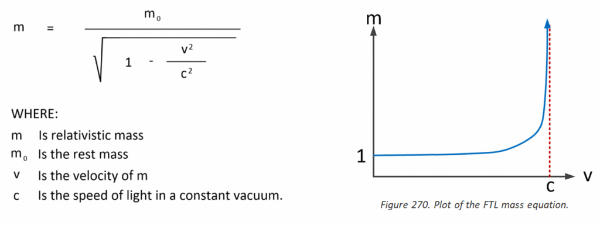
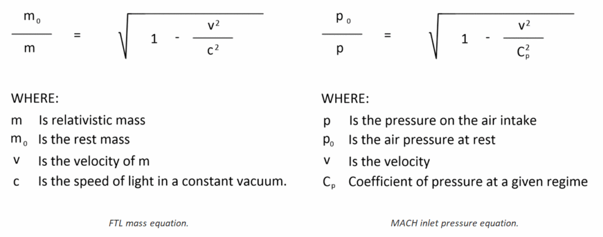
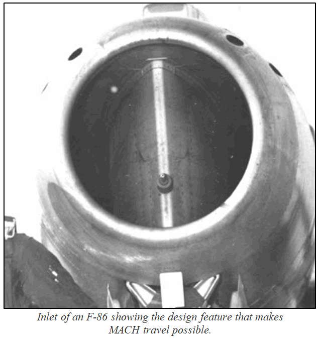
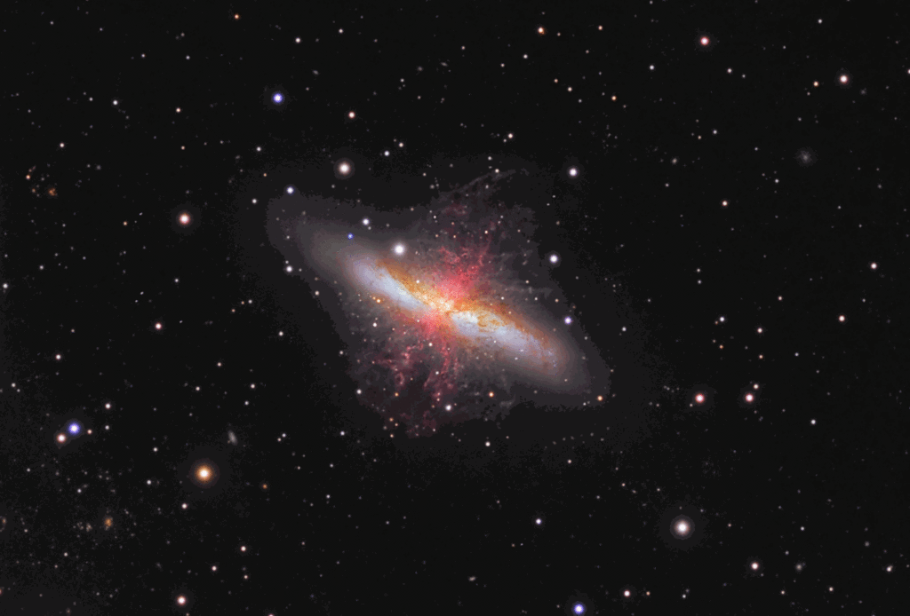

This multi-part post is devoted to the issue of travelling between the stars within the lifetime of a human. It does not necessarily mean that the propulsion method would be so fast as to exceed the speed of light, though that possibility does exist. It simply is a discussion on how the great gulfs between the stars can be traversed using contemporaneous human technology.
As such, it purposely omits dimensional gates and transport portals.
I most certainly do not have the answers regarding this most interesting of subjects.
This post discusses this issue because one of the first things a debunker does is complain that engineering solutions are unattainable. I discuss these issues and more. It is a good read.
The sections
This is part 1 of a four part post. This post consists of four sections as described;
- Part 1 – Introduction to FTL technology – You are here.
- Part 2 – The Techniques
- Part 3 – Other FTL alternatives
- Part 4 – Conclusion and Summary
Some basics
First off, MAJestic as well as our benefactors, have techniques and mechanisms that permit geographical travel anywhere in the universe without using a vehicle. This technology also enables such things as world-line travel, dimensional travel, and time travel.
This is a very powerful technology, but that is not the subject at hand. Here, we will talk about technologies that can be used to traverse large physical distances in relatively short periods of time, without using dimensional portals or gates.
The benefit in this technology is obvious. You need to physically go to a location in order to establish “jump gate” coordinates for it. This will require physical presence, and that means physical travel. (Of course, there are other things that one can do, like trial by error, robots and probes, but please follow my train of thought on this.)
Here we discuss ways to travel “very fast” in our universe, by using existing and known technologies without using a dimensional portal or gate.
Introduction
I would like to start by discussing the premise of extraterrestrials from outside the solar system visiting the earth. This implies, and requires, that they possess (some sort of) faster-than-light travel capability. Thus, I begin my arcane discussions on this most fundamental topic.
The speed-of-light limit argument against the extraterrestrial visitation phenomenon is a theory-based one, but even without suspending the laws of relativity it may not be valid. We simply know too little about other possibilities to rule them out, and for that reason most people believe that the appropriate thing to do is to suspend judgment based on this argument.
Here, I would like begin by taking the time to address some common misconceptions about Einstein’s equations of motion relative to relativistic flight, from the perspective of an Aerospace Engineer.
This subject was broached decades ago in one of my Aerospace Engineering classes back in my college days.
The subject was as relevant then as it is now.
It is a discussion, not only about the equations used, but also about the differences in comprehension and utility between, “scientists”, “engineers” and the understanding of the “general public”.
"No flying machine will ever fly from New York to Paris ... [because] no known motor can run at the requisite speed for four days without stopping." -Orville Wright
The reader should know that the ability to travel faster than the speed of light (or a functionally equivalent method) is a physical problem solvable by engineers.
The empirical evidence of the Michelson-Morley experiment of 1887, now known as the Lorentz-FitzGerald Transformations (LFT), proposed by FitzGerald in 1889, and Lorentz in 1892, show beyond a shadow of doubt that nothing can have a motion with a velocity greater than the velocity of light. In 1905 Einstein derived LFT from first principles as the basis for the Special Theory of Relativity (STR). Today the science of mathematics has become so powerful that it can now be used to prove anything, and therefore, the loss of certainty in the value of these mathematical models. The antidote for this is to stay close to the empirical evidence. That is to say; don’t rely too much on the calculations, but rather on the physically observed effects. (But we all actually know that in this universe, everything actually is possible. It is a multidimensional universe.) The scientists want to create an tangible framework by which to constrain their calculations so that they can remain grounded in “reality”. Ai! This is tying the hands of everyone. That is why conventional scientists have such a problem with FTL flight.Basically the implied axioms (or starting assumptions of the mathematics) requires a multiverse universe or multiple universes, but the mathematics is based on a single universe. Thus even though the mathematics appears to be sound its axioms are contradictory to this mathematics. As Dr. Beckwith states, "reducto ad absurdum". For now, this unfortunately means that there is no such thing as a valid warp drive theory. LFT prevents this. The question we should be asking is not, can we travel faster than light (FTL) but how do we bypass FTL? Or our focus should not be how to travel but how to effect destination arrival. That is the core issue herein. FTL flight is problematic on a number of levels, but destination flight is not. For the purposes of this post, for reasons of simplicity, I equated FTL flight to equal that of “bypassing the Lorentz-FitzGerald Transformations (LFT)”.
Physicists might be able to understand the fabric of the universe, but it is the engineers that manufacture contrivances to utilize the physical laws for the interests of humankind.
That is the difference between what a Scientist is and what an Engineer does.
Our extraterrestrial friends have figured out how to do this, and thus I am convinced (by the many species that have accomplished this) that it can be actually be done.
I’ve seen them. I know that they are from another solar system or systems. They exist, and I know they do. (I have seen them and interacted them just like the reader has interacted with a hamburger and a side of French fries. It is visceral.)
Therefore, they got here using advanced propulsive methods. So we too, can also do this. The speed of light can be breeched. The nay-Sayers can just suck an egg for all I care. I do mean that.
I use the term loosely. This is whether they can actually go faster than the light barrier, or bend the fabric of time, or create dimensional doors, or modify time, or alter the fabric of the universe. It is, no matter how it is accomplished, observed by us mere earth-bound humans as “going faster than the speed of light”.
There are different methods to do this, but most seem to revolve around creating a “bubble” that pushes the constraining known physical factors away from the vehicle.
“The idea that UFOs may or may not exist - we’re so past that point. It’s like, it’s dumb to me to debate whether or not that phenomenon is even real or not. We know it’s real, it’s been around for hundreds of years.” - Tom DeLonge
What the Scientific Community Thought…
“Radical space technologies never reach the public because unknown groups do not wish humanity to have access to the highest knowledge or the most advanced scientific inventions. Perhaps this suppression is out of fear that the masses may be able to explore our Solar System and the Universe beyond it. Whatever the case, it seems they want us to stay at ignorant levels forever.” ― Takaaki Musha, The Orphan Conspiracies: 29 Conspiracy Theories from The Orphan Trilogy
For many years, since the 1930’s, many scientists were convinced that there was a limit to how fast a person can go when travelling through space. They used Einstein’s equations as their “Bible” and burnished it like a huge brass cannon to forcefully shoot down anyone and any statement that dare suggested otherwise.
The following is directly from a discourse ridiculing Mr. Tesla for believing that it was possible to travel speeds faster than light. I think it would be beneficial to read it in it’s entirety at this time.
It comes from “Faster Than Light.” Everyday Science and Mechanics, November, 1931. It was written by Hugo Gernsback.
“It may come as a shock, to most students of science, to learn that there are still in the world some scientists who believe that there are speeds greater than that of light. Since the advent of Einstein, most scientists and physicists have taken it for granted that speeds greater than 186,300 miles per second are impossible in the universe. Indeed, one of the principal tenets of the relativity theory is that the mass of a body increases with its speed, and would become infinite at the velocity of light. Hence, a greater velocity is impossible. Among those who deny that this is true, there is Nikola Tesla, well known for his hundreds of important inventions. The induction motor and the system of distributing alternating current are but a few of his great contributions to modern science. In 1892, he made his historic experiments in Colorado; where he manufactured, for the first time, artificial lightning bolts 100 feet long, and where he was able, by means of high-frequency currents, to light electric lamps at a distance of three miles without the use of any wires whatsoever. Talking to me about these experiments recently, Dr. Tesla revealed that he had made a number of surprising discoveries in the high-frequency electric field and that, in the course of these experiments, he had become convinced that he propagated frequencies at speeds higher than the speed of light. In his patent No. 787,412, filed May 16, 1900, Tesla showed that the current of his transmitter passed over the earth’s surface with a speed of 292,830 miles per second, while radio waves proceed with the velocity of light. Tesla holds, however, that our present “radio” waves are not true Hertzian waves, but really sound waves. He informs me, further, that he knows of speeds several times greater than that of light, and that he has designed apparatus with which he expects to project so-called electrons with a speed equal to twice that of light. Coming from so eminent a source, the statement should be given due consideration. After all, abstract mathematics is one thing, and actual experimentation is another. Not so many years ago, one of the world’s greatest scientists of the time proved mathematically that it is impossible to fly a heavier-than-air machine. Yet we are flying plenty of airplanes today. Tesla contradicts a part of the relativity theory emphatically, holding that mass is unalterable; otherwise, energy could be produced from nothing, since the kinetic energy acquired in the fall of a body would be greater than that necessary to lift it at a small velocity. It is within the bounds of possibility that Einstein’s mathematics of speeds greater than light may be wrong. Tesla has been right many times during the past, and he may be proven right in the future. In any event, the statement that there are speeds faster than light is a tremendous one, and opens up entirely new vistas to science. While it is believed by many scientists, today, that the force of gravitation is merely another manifestation of electromagnetic waves, there have, as yet, been no proofs of this. There are, of course, many obscure tilings about gravitation that we have not, as yet, fathomed, At one time, it was believed by many scientists that the speed of gravitation is instantaneous throughout the universe. This is simply another way of putting it that there are speeds greater than light. Yet, from a strictly scientific viewpoint, no one today has any idea how fast gravitational waves—always providing that the force is in waves—travel. If the moon, for instance, were to explode at a given moment, how long would it be before the gravitational disturbance would be felt on earth? Would the gravitational impulse or waves travel at the speed of light—that is, 186,000 miles per second—or would the effect be instantaneous? We do not know. The entire subject will no doubt arouse a tremendous interest in scientific circles. It is hoped that other scientists will be encouraged to investigate Dr. Tesla’s far-reaching assertions; either to definitely prove or to disprove them.”
This was quite an article. A lot has happened since this article was written. I think that it would best benefit us if we considered what Einstein actually stated, in light of what we actually do know now, today.
(And, of course, to alert us to the debunkers who steadfastly hold on to 1920 technology in order to appease the people who control their paychecks.)
The reader should realize that political power and influences can greatly mold and define scientific reality. If the reader is a true seeker, they will realize this fact and plow ahead in the pursuit of the “real” truth.
Einstein Said…
“Crudely stated, the limitations that concern us are… (1) No object travels faster than light (the Einstein speed limit)…” - Jim Giglio and Scott Snell in "The UFO Evidence: Burdens of Proof". Board Members, National Capital Area Skeptics (NCAS)
When people say that the speed of light is a physical barrier that cannot be breached, and that Einstein proved it, they are flatly wrong.
It shows that not only do they not understand physics, but they have no understanding of [1] mathematics, [2] history, [3] quotes, the [4] sciences or [5] engineering. I guess that is understandable, given what constitutes for education in the United States these days.
This antagonistic statement is not specifically directed at the “Common Core” curriculum, but rather to the entire system of American Public Education. If the reader wants their child to get an education of value then I would suggest they avoid the public school system like the plague, and instead utilize private schools, with outside tutors and a strong dose of parental observed home schooling.
Einstein said no such thing.
I tried to search for a quote by him on this instance, and I was unable to find one. But just because I cannot find one does not mean that there isn’t one.
Though, if he did, he was wrong.
What this alleged “quote” refers to is his equations of motion at high speed relativistic velocities. In those equations, it can clearly be seen that the mass of the vehicle approaches infinity as the speed of light is approached. This means that one can never break the speed of light because it is impossible for the vehicles mass to become infinite.
The physics of Newton is quite fixed in this understanding.
Indeed, under Newtonian physics; matter cannot have an infinite mass in this universe. At least that is the conventional reasoning behind this misunderstanding. It is assumed. No one ever tested the validity of this belief.
Therefore, when people “quote” Einstein, what they are actually doing is “interpreting his equations with bias”. I repeat… “they are interpreting equations with bias to derive a specific predetermined outcome.”

On the surface, the equations appear clean and simple enough. As the vehicles speed approaches the speed of light, the vehicles mass also increases. At a point near the speed of light the mass increases to an infinite amount and thus the speed of light can never be breached.
That is how it works and looks on paper. The equations are quite clear on this.
Aerospace Engineers say…
But when an engineer sees this, he sees that the equations tell a different story.
The equations say that the mass increases in a relativistic manner. (That is all that it says.) However, the engineer then looks at the equations in a different way. They view it in terms of how can the equation be “harnessed”, or utilized.
Thus, if there was a way to alter the behavior of mass in a relativistic universe, then the speed of light could be breached. Everyone can thus attest to the validity of this. It is fundamental.
It has been discovered that the massless formula for gravitational acceleration, g=τc2, where tau τ is the change in the time dilation transformation (dimensionless LFT) divided by that distance. (The error in the modeled gravitational acceleration is less than 6 parts per million). Thereby, proving that mass is not required for gravitational theories and falsifying the RSQ (Relativity, String & Quantum) theories on gravity. There are two important consequences of this finding, (1) we now have a new propulsion equation, and (2) legacy or old physics cannot deliver. But gravity modification per g=τc2 is still based on motion, and therefore, constrained by LFT. That is, gravity modification cannot provide for interstellar propulsion. For that we require a different approach, the “new physics”.
The difference between that of a casual “scientist” and that of a practical engineer is that engineers know that laws can be manipulated and modified. It is their job. It is what they have been trained to do. They manipulate the known physical laws to create machines and devices to solve problems. In the case of relativistic speeds, as difficult the equations are, the engineers point towards solutions.
Somehow, and in some way, a given objects mass is not set. But can be changed and altered.
And, if the vehicles mass could be controlled, then the equation is not fixed. Instead of only one variable; the vehicle velocity (which is the conventional statist belief), there are now two variables. The two variables are now both vehicle velocity and vehicle mass. With two variables, then it becomes possible to overcome physical barriers.
Other factors can also come into play.
Perhaps the speed of light is variable. We assume it is fixed, but there is evidence that it might actually be indeed variable. In fact, a team of Australian scientists has proposed that the speed of light may not be a constant, a revolutionary idea that could unseat the vaulted Einstein theory of relativity.
I do not know if this is valid or not.
The team, led by theoretical physicist Paul Davies of Sydney's Macquarie University, say it is possible that the speed of light has slowed over billions of years. Davies, and astrophysicists Tamara Davis and Charles Lineweaver from the University of New South Wales published the proposal in the August 8 edition of scientific journal Nature. The suggestion that the speed of light can change is based on data collected by UNSW astronomer John Webb, who posed a conundrum when he found that light from a distant quasar, a star-like object, had absorbed the wrong type of photons from interstellar clouds on its 12 billion year journey to earth. Fundamentally Webb's observations meant that the structure of atoms emitting quasar light was slightly but ever so significantly different to the structure of atoms in humans. The discrepancy could only be explained if either the electron charge, or the speed of light, had changed.To establish which of the two constants might not be that constant after all, the investigative team resorted to the study of black holes, mysterious astronomical bodies that suck in stars and other galactic features. They also applied another dogma of physics, the second law of thermodynamics, which can be summarized as "you can't get something for nothing." After considering that a change in the electron charge over time would violate the sacrosanct second law of thermodynamics, they concluded that the only option was to challenge the constancy of the speed of light.
Very interesting stuff.
However, let’s not get too caught up in past paradigms. Today, most people believe that somehow we can go faster than the speed of light using technologies that need to be “flushed out” and improved.
Don’t believe me? Go here;
Whether or not any of these speculative observations have any bearing on the FTL equation is a matter of debate for another time. My conjecture is that there are always contributory factors that can eventually modify the engineering equations and system solutions involved in a given problem.
Using the previous conjectures as an example, we should look at similar circumstances on how engineers provided solutions towards difficult physical hurtles.
At that, let’s look at another barrier to speed; let’s take a peek into the forgotten past…
The Speed of Sound Barrier
This was not the first time that this sort of obstacle to flight was encountered. Let me discuss an earlier barrier to flight; the belief that nothing could go faster than the speed of sound.
The statist or debunker set would argue that this was not true, and they have done so directly to my face. What nonsense. It was LONG considered that the speed of sound was a barrier to flight. It was common knowledge… ...that is up until it was disproved. How about that? They argue that there never was the consideration that there was a barrier to flight faster than Mach 1. They argue this because of engineering efforts during the 1940’s to break the Mach barrier. After all they reason, experiments were conducted to break the barrier. Oh, but what memories they have! Before the 1940’s, in the roaring 1920’s and the 1930’s, this was indeed the case. (Just like today, when we conduct experiments to break the speed of light barrier.) Key point here. Remember that they will always be someone who will say that things cannot be done. Stay away from those people. They are like zoo animals who like their cages.
Or, as otherwise known, the MACH barrier.
The ratio of the speed of the plane, or the speed of the nozzle flow, to the speed of sound in the gas determines the magnitude of many of the compressibility effects. Because of the importance of this speed ratio, engineers give it a special name, the Mach number, in honor of Ernst Mach, a late 19th century physicist who studied gas dynamics. The Mach number M allows us to define flow regimes in which compressibility effects vary.
There was a time, not too long ago, when people believed that nothing could go faster than the speed of sound. This was referred to as the “MACH barrier”.
Today we know that this is not a barrier.
Today we have aircraft that can go much faster than MACH 1. High performance jets can go up to MACH 3 and even faster. And, if that wasn’t enough; efforts have been under way to go much faster to develop conventional airline runway to space access vehicles (MACH 25, and MACH 35 for example).
Chuck Yeager was the first test pilot to break the sound barrier, past Mach 1 on October 14, 1947. He did this in an experimental aircraft known as the X-1.
What is little known about that event was that prior to that test flight many people believed that the speed of sound was a barrier that could not be broken.
“Not many people remember W.F. Hilton, a British aerodynamicist, or the reporter who in 1935 asked him about the purpose of the National Physical Laboratory’s new high-speed wind tunnel. Everybody remembers what Hilton said, though. He displayed a graph plotting the abrupt increase in airfoil drag as its speed nears Mach 1. “See how the resistance of a wing shoots up like a barrier against higher speed as we approach the speed of sound?”” -Stephan Wilkinson (AIR & SPACE MAGAZINE)
No matter how hard the test pilots tried, whenever they flew their planes close to this barrier, the planes literally shook apart.
They would rattle, vibrate wildly, and shutter in wild gyrations.
The plane would become un-flyable, and dangerous for the pilot who flew it. The problem, we know now, was air compressibility.
“The pressure of an oncoming aircraft is transmitted to the air, as the airplane goes faster and faster, it gives a shorter and shorter signal, and the air can’t prepare itself. And when that happens, Bernoulli’s Principle goes to hell in a hand basket.” -Howard Wolko (special adviser for technology at the National Air and Space Museum)
Air compressibility is an important problem that had to be resolved in order to be able to break the sound barrier, and fly at speeds in excess of MACH 1. The problem was due to the coefficient of pressure and its effect of the air pressure on the engines of the plane.
As the plane flew faster, the coefficient of pressure on the engines increased to such a point that the engines started to malfunction and the planes structure began to resonate in an unsafe manner.
Of course, all this history has been forgotten.
Even the most ardent proponents of spaceflight now repeat the ridiculous assertion that “everyone” always “knew” that the MACH barrier could be broken. Obviously, they have forgotten the periodicals of that time, and the known limitations that “everyone knew”.
The Engineers found a Solution
“Your people talk a lot about going to the stars, but you just keep putting your money into other projects, like war and popular music and international athletic events and resurrecting the fashions of previous decades. If you wanted to go into space, you would have.” ― George Alec Effinger, Live! from Planet Earth
FACT.
But luckily, it was engineers who designed the planes that tried to break this barrier were not physicists, or even worse; politicians.
They would have appointed a “blue ribbon panel” to “study” the issue and paid them handsomely. Everything would still be in committee being debated and bantered back and forth. For what it is worth, “blue ribbon committees” are nothing more than currency funneling exercises towards political preferred donor classes to maintain their existences.
The problem, it was determined, was how the air compressed when hitting the inlet nozzle of the aircraft engines. By leaving the inlet wide open and flat, the air compressed naturally and the coefficient of air pressure easily caused the sound barrier to affect the speed and operation of the vehicle.
The air would “splash” with greater and greater force upon the engine. It would hit harder and harder the faster the plane flew.
However, it was later discovered, that by placing a cone in the inlet of the engine, that the air could be redirected in certain controllable ways into the engine.
Instead of “splashing hard” against the engine, the force of the air moved around it. Thus, in so doing this simple “trick”, the engineers were able to alter the pressure of the air upon the engine.
The main purpose of an inlet cone is to slow the flow of air from supersonic flight speed to a subsonic speed before it enters the engine. Except for scramjet engines, all air-breathing jet engines need subsonic airflow to operate properly, and require a diffuser to prevent supersonic airflow inside the engine. At supersonic flight speeds a conical shock wave, sloping rearwards, and forms at the apex of the cone. Air passing through the conical shock wave (and subsequent reflections) slows to a low supersonic speed. The air then passes through a strong normal shock wave, within the diffuser passage, and exits at a subsonic velocity. The resulting intake system is more efficient (in terms of pressure recovery) than the much simpler pitot-intake.
Inlet cones (sometimes called shock cones or inlet centerbodies) are a component of some supersonic aircraft and missiles.
Today they are primarily used on ramjets, such as the D-21 Tagboard and Lockheed X-7. Some turbojet aircraft including the Su-7, MiG-21, English Electric Lightning, and SR-71 also use an inlet cone.
The inlet cone is shaped so that the shock wave that forms on its apex is directed to the lip of the intake; this allows the intake to operate properly in supersonic flight.
As speed increases, the shock wave becomes increasingly more oblique (the cone gets narrower). For higher flight speeds inlet cones are designed to move axially to control how the capture area varies with the duct internal throat area.
Today we have also devised other solutions to this problem, and thus the inlet cone was the first solution that worked. However, it wasn’t the only solution. Now, we have various solutions to this problem. So many, it seems, that people tend to forget that it was a problem in the first place.
"A shock wave forms on the aircraft when it reaches supersonic speeds. From the front of the plane, the shock wave appears as a circle, but from the back and sides, it looks like very sharp spikes coming off the plane. It is a rare and spectacular sight, only visible in humid weather. Usually the planes are up too high when supersonic for a visible vapor wave, and since you can't fly supersonic around populations, very few people have caught it stateside. When you go supersonic, you don't feel a thing. It's not the Chuck Yeager story anymore. Planes that are designed to go supersonic go right through 'the number' without a blink. The airplane is as comfortable to fly at landing speeds as it is supersonic. Things just happen faster." -From the book "The Cutting Edge".
What is most interesting from our point of view are two key points.
The first point is the most obvious. [1] That is that the speed of sound, once thought of as an unbreakable barrier, was overcome through design engineering techniques.
And the second reason, not so obvious, is [2] that the equations for the compressibility of air on an engine is of the same form of that of the mass effects on a relativistic vehicle approaching the speed of light.

This is very interesting for a number of reasons, but for the layperson reading this manuscript, I am afraid that I will have to explain a little about the nature of physics and mathematics in our universe…
It is all about patterns.
No matter what form the physical attribute has; the mathematics that describe the shapes follow patterns.
Physicists have uncovered a hidden connection between a famous 350-year-old mathematical formula for pi and quantum mechanics. This discovery was presented in a paper titled; “Quantum mechanical derivation of the Wallis formula for π”, by Tamir Friedmann. This is fun reading, people, and while the mathematics might be a little obscure for most, the elegance of the derivation is sublime. (Friedmann, Tamar, and Hagen, C.R. (2015) “Quantum mechanical derivation of the Wallis formula for pi,” Journal of Mathematical Physics 56: 112101.).
That is what is obvious here.
But this is not merely coincidence. It is ubiquitous throughout the known physical world. (There are actually university courses in the engineering sciences that teach this principle, so it shouldn’t be too alarming for the uninitiated. There is nothing strange or unusual here. This is standard engineering course material that has been taught in universities for decades.)

The point of all this is to show that while I, myself, do not know how to alter and modify the change of a vehicles mass in relativistic flight regimes, I do believe that it is possible to do so. (Please consider the Robert Lazar comments found elsewhere…) I have this belief, not only because I have physically met extraterrestrials who have this ability, but that there are numerous conventional and mathematical reasons behind my belief.
As such, I most violently reject the often misquoted Einstein quote. “The speed of light is an unbreakable barrier to travel.”
There are means, ways and methods to achieve faster-than-light travel.
It is only that the typical individual does not have the necessary background to resolve this problem, nor the funding and will-power to do so. Thus they are forced to rely on the belief of others.
Others who, for various reasons, loudly make ignorant pronouncements that mask their supreme lack of understanding on the nature of our universe.
We are Still Trying
NASA confirmed in March 2015 that it has selected three companies to develop a new deep space engine to power interplanetary travel. (What this is should be cairified. Obviously the concept of interplanetary travel should be understood. It is travel between planets that is feasible within the lifetime of a human. That is, and should be even more clearly defined as travel from planet to planet that is possible within a 40 year time frame. 80/2 = 40 years.) Really? 40 years travel. Give me a break.
The contestants include privately held [1] Ad Astra Rocket Co. and [2] MSNW LLC, along with the [3] Aerojet Rocketdyne division of space tech stalwart GenCorp. Working under the aegis of NASA’s Next Space Technologies for Exploration Partnerships, or NextSTEP, program, these three companies will offer the agency three separate flavors of cutting-age space engine tech. Generally speaking, none of the three will work on an actual “warp drive,” but rather versions of ion propulsion. Respectively:
The first company; Ad Astra is developing a Variable Specific Impulse Magnetoplasma Rocket, or VASIMR, engine dubbed the VX-200-SS. Using a nuclear reactor to heat and ionize propellant that is then emitted through electromagnetic thrusters, the VASIMR engine puts out 200 kW of power and will be able to reach Mars from Earth in just 39 days, according to Ad Astra. The second company; MSNW has three engine technologies in the works: a one-kilowatt electromagnetic "plasmoid thruster," a "fusion driven rocket," and an electrodeless Lorentz force, or ELF, thruster using "rotating magnetic field and pulsed-inductive technologies." The company said the Department of Defense funded development of its ELF thruster, which can use multiple forms of propellant -- including "Martian Air." Finally, Aerojet Rocketdyne is receiving the biggest of NASA's awards, $18 million, "to complete the development of NASA's Evolutionary Xenon Thruster-Commercial (NEXT-C) Gridded Ion Thruster System." (The reader however, should understand what these numbers mean. The “huge” award of $18 million is but 1/100 of the budget for the ACA website; the “ObamaCARE” signup website.) AR said its NEXT-C engine is already three times as powerful as "current low-power NASA systems," although not yet operating in the targeted 50-to-300 kW range. NASA has asked AR to deliver two complete flight systems for testing.
I, for one, am very happy that NASA is investigating these avenues. But I do believe that the techniques that will eventually be accepted will be those that isolate, or enclose the ship is a trans-dimensional state. This is because of a number of problems that will occur when the ship exceeds the speed of light.
According to Yurtsever and Wilkinson’s analysis, each cubic centimeter of space contains over 400 microwave photons. A ship traveling through space, say, with a hull made from ordinary baryonic matter, would collide with thousands of billions of these photons every second — collisions that should create electron-positron pairs. This would produce considerable drag on a spaceship.
A paper by Raytheon engineers Ulvi Yurtsever and Steven Wilkinson suggests that spaceships traveling at speeds approaching the speed of light must interact with the cosmic microwave background (CMB) and subsequently produce detectable and distinguishable light signatures. At the same time, however, the ensuing drag from the collisions imposes an upper constraint on the speeds at which spaceships can travel.
“While special relativity imposes an absolute speed limit at the speed of light, our Universe is not empty Minkowski spacetime. The constituents that fill the interstellar/intergalactic vacuum, including the cosmic microwave background photons, impose a lower speed limit on any object travelling at relativistic velocities. Scattering of cosmic microwave phtotons from an ultra-relativistic object may create radiation with a characteristic signature allowing the detection of such objects at large distances.” -(http://arxiv.org/abs/1503.05845) Limits and Signatures of Relativistic Spaceflight. arXiv:1503.05845v3 [gr-qc].
"Our assumption that matter-matter interactions can be dealt with when civilization can build relativistic spacecraft may prove false and may be a barrier that will prevent space travel [at relativistic speeds]…" -Raytheon engineers Ulvi Yurtsever and Steven Wilkinson
All of these efforts revolve around improving the techniques to increase vehicular speed. That is the conventional approach. Indeed, development in this arena must be done. However, other avenues of investigation must be considered. And they are, though they are not all that well known.
Compared to other FTL schemes like the Alcubierre drive or Lorentzian wormholes, which rely on unphysical matter fields to stabilize the geometry, the current specified approach relies only on gravitational wave generation and transmission through empty space. (As opposed to some kind of dimensional “bubble”.) Assuming the daunting problem of astronomical scale gravitational wave generation is somehow solved, this method could in principle enable FTL travel without appealing to exotic physics. However a detailed analysis of tidal forces is required before assessing the feasibility of this scheme for transit of payloads.
The nature of the shortcut generation involves the creation of waveforms that compress and dilate spacetime in the direction of flight. In order for signals (or ships) to be able to take advantage of the metric-contracting fields, they must carefully control their timing synchronization, in order to cross the field regions as close as possible to the compression valley, where the distance is minimal between opposing sides of the field region. The region must be crossed in substantially less than T /2, with T being the period of the gravitational wave. Even if the compression of each field region is small, large distance reduction could be accomplished by bridging many pre-configured field regions in a timely manner. It is conceivable that other field configurations exist that achieve better distance compression patterns. Even without exploiting the FTL aspects of the field, time-like geodesics can still be substantially accelerated or decelerated with special field configurations of this type, while remaining in free fall during the transit.
Due to the transversal nature of gravitational waves, the gravitational sources must be distributed orthogonally to the direction of desired FTL geodesic path. These gravitational beams have to be precisely oriented and timed decades in advance, as gravitational waves propagate at the speed of light. This implies some sort of deployment of a wide scale network of gravitational generators around entire star clusters.
| For instance, a region-delimited gravitational wave field can be constructed. This is a field of energy or potential that surrounds a vehicle. It works in such a way that it’s apparent movement is greater than the apparent movement of the surrounding physical universe. (Indeed, in such a way that a subset of geodesics crossing this region will move faster than nearby geodesics moving entirely inside flat spacetime, along a preferred direction. ) It is all about relativity. The null geodesics inside this region will move faster-than-light according to far away observers. The waveform is synthesized from homogeneous plane wave solutions, and the resulting field is the gravitational equivalent of a Gaussian beam. |
Gaussian beams are one of the most basic propagating fields used in optical applications, and its general properties are inherited from the wave equation (and corresponding Helmholtz equation). However, there are differences. Optical fields are oscillations of the electromagnetic vector field Aµ, while gravitational fields are tensor perturbations hµν with two physical degrees of freedom for each mode, so is not an straightforward realisation that there should be a simple equivalent in the gravitational case.
Several individuals have proposed mechanisms within the standard theory of General Relativity (GR) to allow some level of circumvention around the light speed limit, by warping the spacetime geometry in some compact region.
While we discuss the utility of FTL vehicles, the reader must recognize the most important concept of this post; that distance and time are NOT limitions of the physical. Indeed, all are controlled by the physical manifestation and alteration of our our understandings. Consider the movement of a vehicle or person devoid of a physical vehicle; consider the mind and it’s pilot; the soul. The concept of consciousness existing outside the body (e.g. near-death and out-of body experiences, NDE/OBEs, or after death, indicative of a ‘soul’) is a staple of religious traditions, but shunned by conventional science because of an apparent lack of rational explanation. However conventional science based entirely on classical physics cannot account for normal in-the-brain consciousness. The Penrose-Hameroff ‘Orch OR’ model is a quantum approach to consciousness, connecting brain processes (microtubule quantum computations inside neurons) to fluctuations in fundamental spacetime geometry, the fine scale structure of the universe. Recent evidence for significant quantum coherence in warm biological systems, scale-free dynamics and end-of-life brain activity support the notion of a quantum basis for consciousness which could conceivably exist independent of biology in various scalar planes in spacetime geometry.
However, all the mechanisms proposed so far require the engineered spacetime region to be filled with matter that (apparently) violates well established energy conditions, and is not known to exist in nature. ( So many problems…) More over even ignoring the problem of violation of the energy conditions, these geometries have other problems related to acausal setup of the exotic matter distribution, as well as quantum instabilities in the semiclassical limit.
The reader should not get too confused by all the terminology. These are just words that are used to define precise situations. A scalar field is nothing more than just fancy physics-speak for a quantity which takes on a unique numerical value at every point in spacetime. In quantum field theory, scalar fields lead to spinless particles; the Higgs field is a standard example. (Other particles, such as electrons and photons, arise from more complicated geometric objects — spinors and vectors, respectively.)
However, the idea of using matter to curve surrounding spacetime does not exhaust the possibilities that GR offers in order to create customized geometries.
Gravitational waves (GW) are themselves perturbations of geometry that travel at the speed of light. Even while the full theory of GR is a nonlinear theory, the principle of superposition still applies within the limit of weak plane waves, and one can consider some superpositions of such planar waves physically valid perturbations.
The present work shows that for specially crafted gravitational waveforms of this type, one can produce geometries in pure vacuum with Faster-Than-Light (FTL) properties, similar to those obtained via other geometrical drives.
In this work, the geometry of null congruences can be affected in a way that allows FTL communication. To be precise, we can construct a focal region of a gravitational waveform composed of traceless and transverse planar waves. As such we will find that null congruences entering the focal region can become asymptotically accelerated. Thus, they arrive effectively before similar geodesics that do not enter the field region (according to distant observers). The asymptotic delay or advancement of congruences will be affected by the local phase of the perturbation at the moment the geodesic enters the region, the period of the oscillation, as well as the width of the focal region.
Observed vehicles operating at FTL speeds
We have observed other things moving at speeds faster than light.
These things could be anything, but they absolutely do fit the profile of a vehicle that is moving in a FTL flight envelope. An unknown object in the nearby galaxy M82 has started sending out radio waves, and the emission does not look like anything seen anywhere in the universe before. Yikes….!
Given the complex nonlinear geodesic equations that result from the Gaussian perturbation, we were only able to compute analytically the first order correction to the geodesic null and time-like rays crossing the field, and its derivation is detailed

We have thus established that within GR, certain gravitational waveforms can result in geodesics that arrive at distant points earlier than light signals in flat spacetime. As such, we presented an example waveform that can be used to manifest FTL behavior, and obtained an analytic first order perturbative approximation of geodesics approaching the field region. We notice that the timing of entrance to the field region determines the asymptotic delay or advance of signals. The optimal shortcut geodesics are those that cross the field region as close as possible to the time and position of the minimum of the metric waveform.
“We don’t know what it is,” -co-discoverer Tom Muxlow of Jodrell Bank Centre for Astrophysics near Macclesfield, UK.
The thing appeared while Muxlow and his colleagues were monitoring an unrelated stellar explosion in M82 using the MERLIN network of radio telescopes in the UK. A bright spot of radio emission emerged over only a few days, quite rapidly in astronomical terms. Since then it has done very little except baffle astrophysicists. It certainly does not fit the pattern of radio emissions from supernovae: they usually get brighter over a few weeks and then fade away over months, with the spectrum of the radiation changing all the while. The new source has hardly changed in brightness over the course of a year, and its spectrum is steady.
Yet it does seem to be moving – and fast: its apparent sideways velocity is four times the speed of light. Such apparent “superluminal” motion has been seen before in high-speed jets of material squirted out by some black holes. The stuff in these jets is moving towards us at a slight angle and travelling at a fair fraction of the speed of light, and the effects of relativity produce a kind of optical illusion that makes the motion appear superluminal.
Could the object be a black hole? It is not quite in the middle of M82, where astronomers would expect to find the kind of supermassive central black hole that most other galaxies have. Which leaves the possibility that it could be a smaller-scale “microquasar”. A microquasar is formed after a very massive star explodes, leaving behind a black hole around 10 to 20 times the mass of the sun, which then starts feeding on gas from a surviving companion star. Microquasars do emit radio waves – but none seen in our galaxy is as bright as the new source in M82. Microquasars also produce plenty of X-rays, whereas no X-rays have been seen from the mystery object. “So that’s not right either”, Muxlow told New Scientist.
His best guess is still that the radio source is some kind of dense object accreting surrounding material, perhaps a large black hole or a black hole in an unusual environment. If you look at this observed phenomena from the point of view of an aerospace engineer instead of that of an astrophysicist, one can clearly speculate that the object can possibly be a interstellar vehicle engaged in an unusual flight regime.
What ways can humans achieve FTL flight?
“I think a lot of the American people feel more than a little disappointed that the high-water mark for human exploration was 1969. The dream of human space travel has almost died for a lot of people.” -Elon Musk
Presuming that our extraterrestrial overlords permit us, we can and probably will visit nearby stellar neighborhoods using FTL flight or similar systems. (Pause for reader consideration.)
I know that the teleportation portal has capabilities that transcend distances of time and physical space. And perhaps using the same technology we, as humans, can venture out and away from our little solar system nursery here. Perhaps someday we will be permitted to develop our own home-grown version of the teleportation portal. Perhaps we will be granted the permission to build our own kinds of spacecraft with this ability. Perhaps this will happen.
Some things to ponder; the use of super conductive materials is one avenue of study that might provide some great benefits. (For instance, a lanthanum copper oxide compound can be doped over a wide range of compositions, which was used to study a potentially new mechanism of superconduction. In research experiments, a substrate of LaSrCuO4 was used, and an epitaxy technique grew atomically-perfect thin films of three derivative compounds: an insulator and a metal that show no superconductivity, and a superconducting variant with a transition temperature (Tc) of 40K. By growing literally hundreds of combination of interfaces and film thicknesses, the researchers were able to observe superconduction at different temperatures, including superconduction at the metal/insulator interface.)
What I do know about this subject, the reader might find interesting, so I will place it here with all the necessary caveats. This information is direct from <redacted> that <redacted>. Whether it is accurate is up to the reader to determine. I am just reporting it here for the benefit of the reader.
- The Universe, and our galaxy in the Universe, is inhabited with a great variety of intelligent extraterrestrial life. It is not empty by any means. When humans venture forth, they will, accidentally venture into the turf and properties of other races. Some will not care. Other races will care a great deal. It is a wild and dangerous world out there. The human race is far too fragile to venture to the stars at this time.
- With the proper technology, FTL travel is possible. It absolutely is, though the technology would probably be different from what we, today, expect it to be. We will be able to traverse the vast gaps of space and visit other places.
- However colonization will be problematic. So when we visit them we will find that they are not suitable for our human biological bodies to live there. Any colonies we create will die out eventually. Humans will have to be able to adapt themselves biologically to adapt to other worlds in our galaxy. This cannot be done without extraterrestrial overseer guidance. As the soul construct archetypes are fixed and discrete. (By intention and organization; not by natural biological processes.)
- All FTL technology will require a degree of quantum physics in the manipulation of the fabric of space and time. This will affect all of the creatures and beings in all the other stars in our neighborhood. How we proceed with this development and how it will be engaged will have to be through approval of the local federation.
As the reader can clearly see, obtaining FTL flight to leave our planet is not as easy as it appears to be on the surface. It is not simply one of obtaining the technology or science to do so. It is not a problem of getting political or societal support to develop the technology. It is a matter of the realities of our place in the grand scheme of things.
We will need permission to do so from the galactic federation and their representatives in this region; the <redacted>.
Next…
This post continues to part 2, where we discuss the techniques that are being constructed right now.